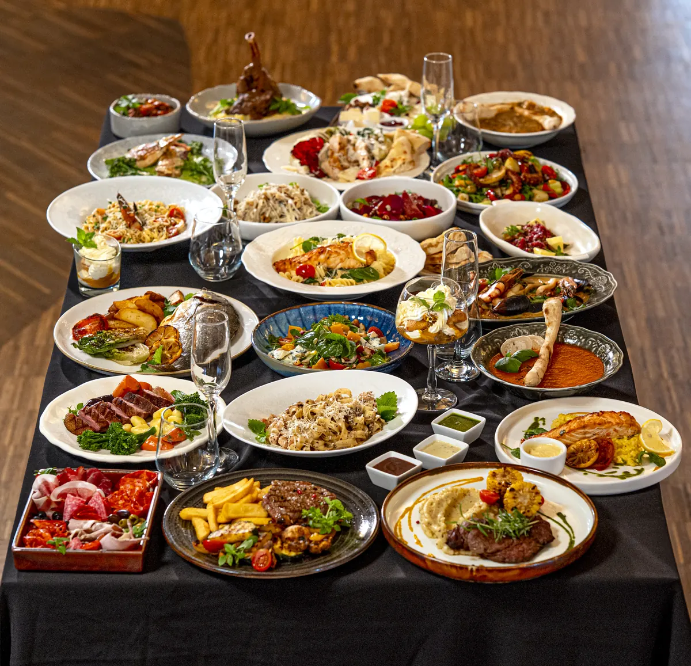

Kuchnia polsko-włoska
Tatar, żurek i golonka obok tagliatelle, risotto i pizzy. Karta z gramaturami i cenami, piwa kraftowe i drinki z baru.
Otwarte codziennie 12:00-22:00, w niedzielę 12:00-21:00

Restauracja to serce obiektu
Tworzymy autorskie, wyselekcjonowane menu oparte na najwyższej jakości, świeżych składnikach. Odkryją u nas Państwo oryginalne smaki inspirowane lokalną kulturą kulinarną, podane w nowoczesnej aranżacji.

Menu na przyjęcie albo spotkanie firmowe
Kolacje serwowane, bufety i stoły biesiadne. Z przyjemnością skomponujemy menu z uwzględnieniem preferencji gości: wegetariańskie, wegańskie, bezglutenowe.